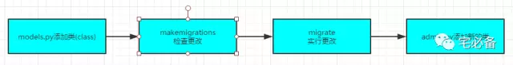
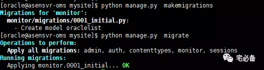
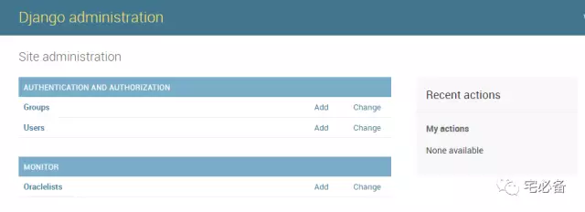
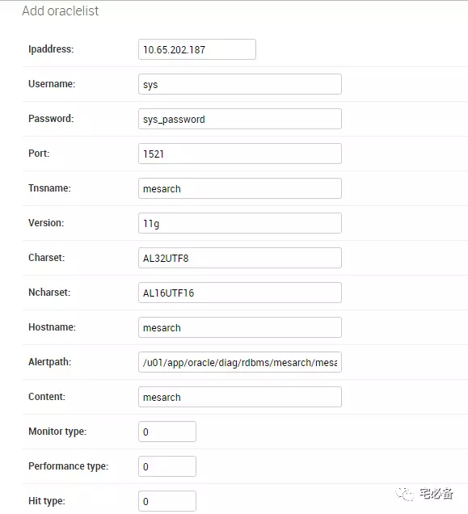
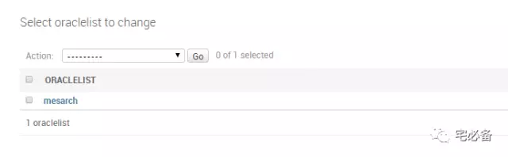
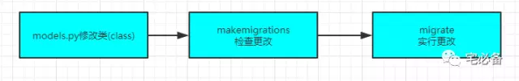
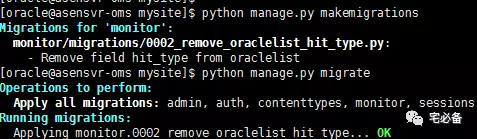

使用Django管理数据库表
上节讲了如何利用Django建立自己的第一个网站
这节讲如何利用Django定义一个数据库的表并同步到MySQL中
最后讲述如何修改表结构
开发环境
操作系统:CentOS 7.3
Python版本 :2.7
Django版本: 1.10.5
操作系统用户:oracle
ORM框架
Django采用ORM模型处理数据库关系
对象-关系映射（Object-Relational Mapping，简称ORM），简单来说就是通过面向对象的方法来映射后端数据库
在后面的实例中会有介绍，它通过 类(class)的方式定义关系型数据库的表结构
首先看下整体的流程

编辑models.py文件
vim monitor/models.py
添加oraclelist类
class oraclelist(models.Model):
ipaddress=models.GenericIPAddressField()
username=models.CharField(max_length=100)
password=models.CharField(max_length=100)
port=models.CharField(max_length=50)
tnsname=models.CharField(max_length=100)
version=models.CharField(max_length=100)
charset=models.CharField(max_length=100)
ncharset=models.CharField(max_length=100)
hostname=models.CharField(max_length=100)
alertpath=models.CharField(max_length=300)
content=models.CharField(max_length=300)
monitor_type=models.IntegerField(default=1)
performance_type=models.IntegerField(default=0)
hit_type=models.IntegerField(default=1)
def __unicode__(self):
return self.tnsname
class Meta:
app_label='monitor'
- alertpath填写alert日志文件路径
- content 填写该数据库用途
- monitor_type,performance_type,hit_type 暂时不介绍，大家照写就行
- unicode函数中tnsname表示后台显示的时候默认显示tnsname,Python3用str关键字
- meta 类填写monitor app名称
Django栏位(Field)和原数据库的对用请参考如下连接
https://docs.djangoproject.com/en/1.11/ref/models/fields/ http://python.usyiyi.cn/translate/django_182/ref/models/fields.html
同步数据库
python manage.py makemigrations
python manage.py migrate

添加该表至admin后台
vim monitor/admin.py
from monitor.models import oraclelist
admin.site.register(oraclelist)
查看admin后台是否显示

填写需要运维的Oracle数据库信息

验证添加

添加完成后可以看到我们添加的信息
可以看到显示的mesarch为tnsname，为在models.py的oracelist类中unicode处定义，大家可根据需要自己修改
修改表结构
从Django前几个版本开始支持自动处理表结构的更改，如添加字段，修改字段类型等
我们只需在models.py文件中进行相应的修改即可

我们这里通过删除hit_type栏位来模拟下

可以看到已经更改完成，记得调回来
提示：从上图可以看出更改记录是记录在migrations目录下，每次变更都会新建个文件。
源码地址
源码请查看我的GitHub主页
https://github.com/bsbforever/wechat_monitor
今天介绍了介绍了如何利用Djnago创建一个MySQL的表以及如何修改它。
下期将介绍如何利用Django建立我们的第一个页面